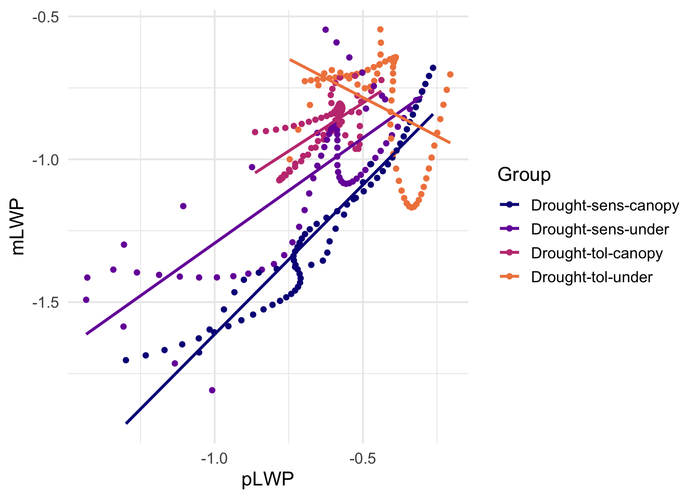

Python has taken most of the hype as the most widely used programming language for machine learning. This has left R users with a choice: 1. learn Python or 2. don’t do machine learning very well. Enter tidymodels, Posit’s solution to machine learning in R, using a framework similar to the tidyverse.
In this session of the Classical Machine Learning workshop series, we will overview how to build a model using the tidymodels framework in R. This is the first necessary step towards the more sophisticated models that we will deploy later in this series.
This workshop borrows heavily from open source materials hosted on tidymodels.org found here. The author replaced the original urchins data with Meredith, Ladd, and Werner 2021 which is described below.
Objectives:
Load and examine data
Build and fit a model
Use a model to predict
Model with different engines
Introduction
How do you create a statistical model using tidymodels? In this article, we will walk you through the steps. We start with data for modeling, learn how to specify and train models with different engines using the parsnip package, and understand why these functions are designed this way.
To use code in this article, you will need to install the following packages: broom.mixed, dotwhisker, readr, rstanarm, RCurl and tidymodels.
library(tidymodels) # for the parsnip package, along with the rest of tidymodels
── Conflicts ───────────────────────────────────────── tidymodels_conflicts() ──
✖ purrr::discard() masks scales::discard()
✖ dplyr::filter() masks stats::filter()
✖ dplyr::lag() masks stats::lag()
✖ recipes::step() masks stats::step()
• Use tidymodels_prefer() to resolve common conflicts.
# Helper packageslibrary(broom.mixed) # for converting bayesian models to tidy tibbleslibrary(dotwhisker) # for visualizing regression resultslibrary(RCurl) # for reading in text files from a URL
Attaching package: 'RCurl'
The following object is masked from 'package:tidyr':
complete
# Set global theme for ggplotstheme_set(theme_minimal(base_size =14))# minimal theme, 14pt fonttheme_update(legend.position ="right") # legend to the right
Canopy rain forest drought tolerance data
Let’s use the data from (Meredith, Ladd, and Werner 2021) which is from a study that investigates the effects of climate change on canopy and understory (those that grow below the canopy and are share tolerant) trees. The data examine water flux in trees across four groups based on drought susceptibility Group:
drought-sens-canopy: drought sensitive canopy trees
# Read in csv from the webdata <-getURL("https://raw.githubusercontent.com/Gchism94/Data7_EDA_In_R_Workshops/main/Data7_EDA_In_R_Book/data/Data_Fig2_Repo.csv")data <-read.csv(text = data)
For each of the drought sensitivity groups (Group), we know their:
Sap_Flow: Sap flow rate \(V_s\) in cm hr\(^-1\).
pLWP: Pre-dawn water potential (MegaPascals MPa) representing the potential (energy) of water flow throughout the tree.
mLWP: Midday water potential (MegaPascals MPa) representing the potential (energy) of water flow throughout the tree.
TWaterFlux: Normalized total water flux (sap flow Sap_Flow, pre-dawn pLWP and midday mLWP water potential) in each treatment group. Values are normalized based on pre-drought levels.
Plot the data before modeling:
ggplot(data,aes(x = pLWP, y = mLWP, group = Group, col = Group)) +geom_point() +geom_smooth(method = lm, se =FALSE) +scale_color_viridis_d(option ="plasma", end =0.7)
`geom_smooth()` using formula = 'y ~ x'

Build and Fit a Model
A standard three-way analysis of variance (ANOVA) model makes sense for this dataset because we have both a continuous and a categorical predictor variables. Since the slopes appear to be different for at least two of the drought treatments, let’s build a model that allows for two-way interactions. Specifying an R formula with our variables in this way:
mLWP ~ pLWP * Group
allows our regression model depending on pre-dawn water potential pLWP to have separate slopes and intercepts for each drought sensitivity Group.
For this kind of model, ordinary least squares is a good initial approach. With tidymodels, we start by specifying the functional form of the model that we want using the parsnip package. Since there is a numeric outcome and the model should be linear with slopes and intercepts, the model type is “linear regression”. We can declare this with:
linear_reg()
Linear Regression Model Specification (regression)
Computational engine: lm
That is pretty underwhelming since, on its own, it doesn’t really do much. However, now that the type of model has been specified, we can think about a method for fitting or training the model, the model engine. The engine value is often a mash-up of the software that can be used to fit or train the model as well as the estimation method. The default for linear_reg() is "lm" for ordinary least squares, as you can see above. We could set a non-default option instead (keras):
linear_reg() %>%set_engine("keras")
Linear Regression Model Specification (regression)
Computational engine: keras
Perhaps our analysis requires a description of the model parameter estimates and their statistical properties. Although the summary() function for lm objects can provide that, it gives the results back in an unwieldy format. Many models have a tidy() method that provides the summary results in a more predictable and useful format (e.g. a data frame with standard column names):
This fitted object lm_fit has the lm model output built-in, which you can access with lm_fit$fit, but there are some benefits to using the fitted parsnip model object when it comes to predicting.
Suppose that, for a publication, it would be particularly interesting to make a plot of the mean midday water potential (mLWP) for trees that have a pre-dawn water potential (pLWP) of -1.75 MPa. To create such a graph, we start with some new example data that we will make predictions for, to show in our graph:
To get our predicted results, we can use the predict() function to find the mean values at 200 cm hr\(^-1\).
It is also important to communicate the variability, so we also need to find the predicted confidence intervals. If we had used lm() to fit the model directly, a few minutes of reading the documentation page for predict.lm() would explain how to do this. However, if we decide to use a different model to estimate urchin size (spoiler: we will!), it is likely that a completely different syntax would be required.
Instead, with tidymodels, the types of predicted values are standardized so that we can use the same syntax to get these values.
When making predictions, the tidymodels convention is to always produce a tibble of results with standardized column names. This makes it easy to combine the original data and the predictions in a usable format:
Every one on your team is happy with that plot except that one person who just read their first book on Bayesian analysis. They are interested in knowing if the results would be different if the model were estimated using a Bayesian approach. In such an analysis, a prior distribution needs to be declared for each model parameter that represents the possible values of the parameters (before being exposed to the observed data). After some discussion, the group agrees that the priors should be bell-shaped but, since no one has any idea what the range of values should be, to take a conservative approach and make the priors wide using a Cauchy distribution (which is the same as a t-distribution with a single degree of freedom).
The documentation on the rstanarm package shows us that the stan_glm() function can be used to estimate this model, and that the function arguments that need to be specified are called prior and prior_intercept. It turns out that linear_reg() has a stan engine. Since these prior distribution arguments are specific to the Stan software, they are passed as arguments to parsnip::set_engine(). After that, the same exact fit() call is used:
# set the prior distributionprior_dist <- rstanarm::student_t(df =1)set.seed(123)# make the parsnip modelbayes_mod <-linear_reg() %>%set_engine("stan",prior_intercept = prior_dist,prior = prior_dist)# train the modelbayes_fit <- bayes_mod %>%fit(mLWP ~ pLWP * Group, data = data)print(bayes_fit, digits =5)
parsnip model object
stan_glm
family: gaussian [identity]
formula: mLWP ~ pLWP * Group
observations: 276
predictors: 8
------
Median MAD_SD
(Intercept) -0.56813 0.04422
pLWP 1.04504 0.06296
GroupDrought-sens-under 0.00835 0.06143
GroupDrought-tol-canopy 0.10172 0.10937
GroupDrought-tol-under -0.48327 0.06872
pLWP:GroupDrought-sens-under -0.31005 0.08285
pLWP:GroupDrought-tol-canopy -0.37154 0.16722
pLWP:GroupDrought-tol-under -1.58075 0.13124
Auxiliary parameter(s):
Median MAD_SD
sigma 0.12762 0.00564
------
* For help interpreting the printed output see ?print.stanreg
* For info on the priors used see ?prior_summary.stanreg
This kind of Bayesian analysis (like many models) involves randomly generated numbers in its fitting procedure. We can use set.seed() to ensure that the same (pseudo-)random numbers are generated each time we run this code. The number 123 isn’t special or related to our data; it is just a “seed” used to choose random numbers.
To update the parameter table, the tidy() method is once again used:
A goal of the tidymodels packages is that the interfaces to common tasks are standardized (as seen in the tidy() results above). The same is true for getting predictions; we can use the same code even though the underlying packages use very different syntax:
This isn’t very different from the non-Bayesian results (except in interpretation).
Note: The parsnip package can work with many model types, engines, and arguments. Check out tidymodels.org/find/parsnip/ to see what is available.
Why does is work that way?
The extra step of defining the model using a function like linear_reg() might seem superfluous since a call to lm() is much more succinct. However, the problem with standard modeling functions is that they don’t separate what you want to do from the execution. For example, the process of executing a formula has to happen repeatedly across model calls even when the formula does not change; we can’t recycle those computations.
Also, using the tidymodels framework, we can do some interesting things by incrementally creating a model (instead of using single function call). Model tuning with tidymodels uses the specification of the model to declare what parts of the model should be tuned. That would be very difficult to do if linear_reg() immediately fit the model.
If you are familiar with the tidyverse, you may have noticed that our modeling code uses the magrittr pipe (%>%). With dplyr and other tidyverse packages, the pipe works well because all of the functions take the data as the first argument. For example:
data %>%group_by(Group) %>%drop_na() %>%# note that NAs need to be removedsummarize(med_pLWP =median(pLWP))
whereas the modeling code uses the pipe to pass around the model object:
bayes_mod %>%fit(mLWP ~ pLWP * Group, data = data)
This may seem jarring if you have used dplyr a lot, but it is extremely similar to how ggplot2 operates:
ggplot(data,aes(pLWP, mLWP)) +# returns a ggplot objectgeom_jitter() +# samegeom_smooth(method = lm, se =FALSE) +# samelabs(x ="pLWP", y ="mLWP") # etc.
Meredith, Laura, S. Nemiah Ladd, and Christiane Werner. 2021. “B2WALD Campaign Team and Contributions.” University of Arizona Research Data Repository. https://doi.org/10.25422/AZU.DATA.14632662.